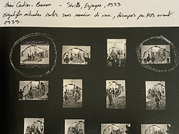
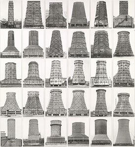

Young Lee

Palabras en la superficie:
continuación y expansión del registro de letreros iniciado en el mercado de “Todo” de Hwanghak-dong
El trabajo nació de la localidad de los mercados de segunda mano. Los letreros, a través de su forma centrada en la tipografía y los conjuntos de palabras agrupables por categorías, revelan rasgos propios. De ahí se extendió a Paz y Reunificación, que explora la realidad de la división, mientras continúo recopilando rótulos manuscritos. El cuerpo acumulado se organizó en una exposición individual en Label Gallery y, posteriormente, se desarrolló mediante varias colaboraciones. Ese proceso permitió ampliar los límites del trabajo más allá de la repetición mecánica, utilizando técnicas de transferencia de imagen y materiales antes desatendidos. Con series como Escamas (transferencia) y Chaqueta floja (bolsas de plástico), avanzo hacia una práctica más activa basada en la letra como materia.

Cosas irreductibles:
del tiempo no lineal a una sensibilidad ecoética
Inspirado por el poema “Azufaifa y abeja” de Park Kyung-ri, registré paisajes urbanos donde se entremezclan plantas y artefactos. He explorado conceptos y afectos abstractos mediante objetos y situaciones concretas. La aceptación sensible de la vida y la muerte, la formación y disolución del sujeto, se volvió un eje del trabajo; sumado a la reflexión sobre la postura ontológica de la fotografía, la práctica se expandió al descubrir y responder a estructuras orgánicas, encaminándose gradualmente desde las grandes ideas hacia la sensibilidad cotidiana.

Estructuras en proceso:
registro de acontecimientos y descubrimiento de tipologías
Serie que documenta casas de época colonial en el centro urbano. A diferencia del topónimo, “Chungmuro” suele percibirse como un lugar cargado de historia. Al cambiar el entorno externo, también cambia la percepción de la localidad; dentro de redes cada vez más densas que cruzan fronteras y se expanden con flexibilidad, la localidad se difumina mientras afloran rasgos universales de estructura. El trabajo sigue el flujo de las tipologías para registrar y descubrir.
Hilo enredado, jarrón lunar
La máquina del tiempo no aparecerá. El mundo se recompone cada vez en torno a recuerdos esenciales. No existe un “hecho objetivo” puro; por eso aquella máquina carece de uso. No hay comienzo ni cierre.
Si digo que fotografío letreros, en el portafolio parece que el inicio fue Todo Mercado (2007). En realidad fue un resultado, quizá también una causa. Diez años antes, en 1997–98, al volver del viaje escolar, mi madre me reprendió por fotografiar textos explicativos e indicaciones; tampoco entonces retrataba mucho a la gente. Diez años más atrás, en 1986–87, caminaba de su mano por la avenida frente al mercado leyendo letreros sin parar. Primero me elogió; luego, cansada, me pidió que lo dejara. Aquellas fotos ya no existen. Mi madre no tiene apego a las fotografías: al mudarnos a Wonju se perdió todo; incluso una foto de mi primer mes o de mi primer cumpleaños desapareció, y contó que un chamán dijo que podría morir joven y que por eso la entregó allí. Hoy he superado la edad de mi padre; quizá eso valió de algo.
A mí me ocurre algo parecido. Aunque pierda un rollo entero o borre originales digitales, puedo volver a fotografiar. No concibo el mundo como una secuencia de acontecimientos, sino como una repetición de reestructuraciones. No me gusta hablar en abstracto, pero esa tendencia asoma. Tirar del tiempo como si fuera un ovillo no tiene sentido. Como un moon jar, el aspecto es el mismo: cambia el ángulo de mirada. Estamos hechos para percibir un “círculo” geométrico que no existe en el mundo. Un mundo gestáltico, quizá nuestra mayor atadura. Entre ideal y realidad hay una impotencia.
Perder todas las fotos sería penoso, no imposible de rehacer. En una clase de medios mixtos del profesor Lee Joo-hyung en Keimyung, la tarea era rayar el negativo para ampliar la expresión. Pasé por un depósito de maniquíes; fotografié a través de una ventanilla. La puerta estaba cerrada, apenas había acceso; no había otro encuadre posible. Entregué negativos rayados. El profesor dijo: “Si logras una foto exactamente igual, te pongo la máxima nota”. Sabía que mi expediente no era bueno; no cambiaría mucho. Pero, por conocer las condiciones extremadamente limitadas de entonces, dije que podía. La puerta seguía cerrada y encuadré desde el mismo sitio, pero los maniquíes habían cambiado de lugar. Comprendí que no existe “la misma” foto. No solo por irreversibilidad: la composición no puede repetirse. Sin embargo, el cuarto seguía cerrado y los maniquíes de pie. Nada había cambiado.
Me faltaba el eslabón. No tenía un sueño, así que no tenía adónde ir. En primaria quizá escribí “científico”, luego no recuerdo más. Estudié fotografía por un suplemento de una guía de estudio con una modelo bonita; en la sección de “profesiones con futuro” aparecía organización de eventos, y entre las carreras afines figuraba fotografía. A duras penas entré en la lista. Viéndolo ahora, fotografía me sienta mejor. Las guías se apilaban como nuevas, pero los solucionarios señalaban disparates; un día dejé de fiarme. No basta con la cara bonita. Tampoco hice con esmero otras guías. Me costaba interesarme; en casa solo había una compacta Samsung de 35 mm. Ingresé en fotografía prácticamente “sin cámara”. Suena impropio, pero no me parece raro. Sigo, porque es lo que venía haciendo. No me desvivo, pero tampoco abandono. Hallar el enlace era crucial.
Llené el cupo de avisos académicos y me alisté. Pensé en los marines por el calendario de reincorporación, pero me disuadieron. Como había muchos solicitantes para el ejército de tierra, entré en febrero. En el apartado “carácter” escribí: “Parece introvertido, pero descarado”. Mi madre tenía razón. La vida aislada despertó sensaciones que uno no suele vivir: con los ojos cerrados es más negro que la oscuridad, hay que tantear con las manos los ojos abiertos; a −45 °C de sensación, la gente calla y suelta carcajadas; antes de que llegue el sueño, primero se enfrían los brazos. El arce al atardecer, un cielo atiborrado de estrellas —no es una figura; con visor nocturno de verdad no hay huecos. Nunca volví a sentir aquello. Tal vez por eso me interesan poco el turismo o la gastronomía; tras cavar con ganas, el arroz pegajoso y los acompañamientos corrientes saben bien. Mi padre, de la vieja Daegu, me enseñó los “Mil caracteres” y me regaló Analectas para niños por el Día del Niño. No era precisamente un hombre de “buen gusto”; mi madre lo sabe. Habré leído solo el principio. No creía que yo lo entendiera. También dejé a medias los “Mil caracteres”: era una dirección.
Me gusta esta frase del Cai gen tan: “Quien se maravilla con lo curioso no tiene gran visión; quien camina solo no sostiene su entereza”. No sé si tengo umbral alto o insensibilidad. Sí sé que por eso hablo largo. Me fijo en lo cercano, hago fotos trilladas, cuento historias ingenuas; quizá en este campo aquellas dos cosas sean elecciones excluyentes. A veces siento que mis obras no atraen miradas, tal vez eso influye en que no busque composiciones dramáticas. Tras volver a la universidad, trabajé medio semestre “como los demás”: llegar menos tarde y llevar las tareas. Tal vez era un autorretrato. Vimos referencias y entregamos copias en blanco y negro. Sin apenas proceso, entendí demasiado pronto el punctum: una mancha parda en mi espalda. La había olvidado. Mi madre invocaba a mi padre cuando yo desordenaba; a veces aún lo hace. Ni siquiera recuerdo en qué costado está.
En cierto momento empecé a evitar imágenes incómodas. Esa incomodidad no difiere del punctum de Barthes. Aquello in-codificable se volvió una especie de indulgencia de la obra. Como método fotográfico, lo uso si hace falta. En el posgrado esa tendencia se acentuó. En la licenciatura probé otras formas y usé el punctum sin rodeos. Proseguí casi escapando; viendo a colegas trabajar por su cuenta, entendí que no hacía falta que la fotografía “no pareciera fotografía”, ni quería salir del paso. Volví al origen: busqué el punto de bifurcación en la época de culminación técnica de los fotógrafos modernos. La fotografía es el registro más nítido del instante; una obviedad que, vista de otra forma, nos obliga a dudar y negar la realidad, y puede convertirse en forma sumamente abstracta. Aquellos logros técnicos abrieron la posibilidad de expandir el concepto. Es decir, como el moon jar, posibilitan dibujar un “círculo”: forma hecha de asimetría total y centros múltiples; sistema cerrado sin dirección de cambio, solo recombinación. Un mundo que requiere percepción geométrica. Aceptar el desequilibrio entre inconmensurables era condición necesaria.
Este texto no explica la obra
Estoy esforzándome más que nunca por comprender mi trabajo. Hasta hace poco evitaba decir “obra” y solo decía “hacer fotos”. “Obra” no solo nombra el resultado: implica actitud, dirección y relación. Evitaba las declaraciones abstractas que suenan a manifiesto; como práctica y resultado no siempre están atados, lo postergaba. En los últimos años, tras postulaciones y revisiones de portafolios, decidí presentar el trabajo con más decisión. Me sentía en un borde, una periferia. Parte se debe a mi poca labia, pero quizá abroché mal el primer botón. Ante todo, entendí que, más allá de mi desesperación momentánea, no había más esperanza.
La actitud vital no se separa del trabajo; el medio porta la voluntad de ir más allá de su propia naturaleza.La fotografía emplea el tiempo y el espacio de manera más directa que cualquier otro medio. Con frecuencia se agrupan fotografía y video por comodidad, pero son esencialmente distintos. La imagen en movimiento sigue construcciones narrativas de causa y efecto; el montaje borra coordenadas y crea un tiempo-espacio propio. En ese sentido formal, es como la pintura: un mundo compuesto. Por eso, quizá representa el tiempo-espacio, pero no lo manipula de forma directa.
La sensación espacio-temporal de la fotografía está atada a la realidad física; actúan mecánicas básicas. En un “campo” dinámico donde se superponen relaciones políticas, sociales, culturales e históricas, el sujeto —como pequeño campo— se genera y se extingue. Nace incapaz de existir aislado, especializado en tratar estructuras relacionales. La fotografía ocupa coordenadas físicas, pero no solo como ubicación: también como intersección de alta densidad. Ese “campo” la fundamenta y, a la vez, tiende a desbordar el marco y a difuminar la forma.
En un sistema cerrado, la energía total se conserva; puede transformarse de forma, pero su cantidad no cambia. —Primera ley de la termodinámicaLos dinamistas psíquicos suponen que la mente tiene fuerza y dirección y puede transferirse; el eterno retorno de Nietzsche, por su parte, muestra, mediante la recombinación de materia finita en tiempo infinito, una voluntad afirmativa ante el mundo. Los fenómenos psíquicos siguen trayectorias afines a leyes físicas y se entrelazan; la práctica es su interacción. El resultado excede la proyección: mediante el “instante estructurado” revela condiciones de resonancia donde el individuo reconoce la identidad en la diferencia y responde.

“Nubes”: ¿proyección o identidad estructural?
Alfred Stieglitz presentó Equivalents desde el concepto de “equivalencia”. Al decir que “las nubes son como mis emociones”, quizá rozaba la proyección: una vía intuitiva y estética. No lo explicitó, de modo que no puede saberse con certeza. La historiografía lo ve como un giro contra el pictorialismo hacia una práctica autónoma. Teóricos posteriores lo leen como identidad estructural: el proceso y la forma de las nubes coincidían en amplitud con los vaivenes de su vida. Es difícil separar ambas cosas; sin embargo, si alguien en un trance similar halla eco en esas imágenes, quizá hay resonancia. Sabemos por experiencia que no hay dos nubes iguales, ni en la realidad ni en la serie. La resonancia con su obra no es solo reflejo intuitivo o afectivo: también es respuesta estructural.
La hoja de contactos de Cartier-Bresson: repetición al servicio de la forma.
Entiendo el “método estructural” como un salto al tiempo no lineal. Al estructurar el “campo” orgánico, este existe fuera del tiempo secuencial y causal. Cuando se publicó la hoja de contactos de Cartier-Bresson, muchos quizá se decepcionaron con su “instante decisivo”. El título francés alude a “imágenes apresuradas”; el inglés, a The Decisive Moment.“Para mí, fotografiar es, en una fracción de segundo, reconocer simultáneamente el significado del suceso y la organización formal precisa que le confiere la mejor expresión”. —Henri Cartier-BressonSus fotos parecían surgir como un parpadeo, sin recortes, con la estética del “instante” perfecto. Pero la hoja de contactos muestra incontables repeticiones para obtener una imagen final. Llegó al resultado a través de forma, ritmo y equilibrio: capturó una posibilidad entre infinitas variaciones y, por recombinación, aprehendió la estructura formal. No recortó un trozo de tiempo lineal; trasladó la realidad fuera del tiempo: “instante estructural”. Aun “decisivo”, irradia desde su estructura interna. La forma puede ser contenido; su obra se optimizó para ello. Yo, sin embargo, necesito más puntos de cruce: instantes alcanzables por resonancia entre estructuras que superen al sujeto individual.

Pimiento: la belleza formal de la fotografía.
En el extremo opuesto de Stieglitz estuvo el grupo f/64, también contrario al pictorialismo. Si Stieglitz vislumbró una posibilidad intuitiva, f/64 buscó el límite de la expresión fotográfica. Con f/64 exhibieron una nitidez formal llevada a la claridad. Fue un traslado estético del punto de vista objetivo que la fotografía puede mostrar y, a la vez, un hallazgo. Explorar posibilidades distintas en la misma época resultó fascinante. Liberada del pictorialismo, la fotografía empezó a relacionarse con el mundo mediante estructuras internas y externas, expandiéndose hacia un “campo” dinámico. Tal vez la forma no sea solo contenido o método, sino un medio para indagar la esencia.
Escultura anónima: la individualidad emerge en la estructura repetida.
Los Becher dispusieron arquitecturas industriales en matrices para comparaciones tipológicas. Cada estructura es independiente y pertenece a una tipología; la diferencia y la identidad estructural se repiten, produciendo valor estético. Llamaron a eso “escultura anónima”: articular objetos dispersos y particulares en una estructura que genere sentido. Esto va más allá del registro y se extiende a una estructura ontológica. Sin diferencia no hay tipología; sin tipología no hay reconocimiento de la diferencia. La condición para que cada existencia se manifieste es captar la tipología: quizá también sea un modo de comprender al otro.“La muerte es la posibilidad más propia del Dasein”. —HeideggerEl sujeto existe de forma provisional en el flujo; la existencia se expande hacia el otro mediante la individualidad. La muerte, encarnada de modo singular en cada quien, es una condición absoluta de lo individual y puede serlo de lo tipológico, porque nos hace incluir a los individuos en una misma estructura. Como seres que perciben nítidamente el final, nuestra sensibilidad hacia el tiempo lineal y físico forma un pequeño campo con límites definidos y cambio orgánico constante. Esos campos pueden resonar entre sí a través de la estructura. El cruce es posible porque ocurre como “estructura de respuesta”. Así reconozco y respondo a la estructura del otro a través de la mía. Es, a la vez, deshacer la tendencia del sujeto a cerrarse y completarse y ampliar su red hacia un campo mayor. Un modo no destructivo y no violento: mi ética de la distancia. Es también mi vacilación y la distancia perpetua con un otro al que nunca se iguala ni se alcanza. La resonancia es mi mejor intento por tocar la estructura de tu existencia; también es una forma de estar.
“El Otro me hace objeto; bajo esa mirada, yo no soy yo”. —Sartre

La fotografía no “habla de esta persona”; solo se manifiesta a través de la estructura.
Lo más cercano está más lejos
Vivir es trazar constelaciones a escondidas. Más que una vida decorosa que “podría” existir en algún lugar, me resulta más cercana la constelación de Orión extendida en la noche. En el ascensor de madrugada, el tenue olor a arroz en el aliento ajeno me recordó los bocados que mi cuerpo, reacio, tragó a la fuerza. Aunque nadie me presione, yo no podría vivir así. Hay que salir a oscuras para llegar a tiempo: algo que uno debe tragar.
Al final de la escalera, en el punto donde roza el cielo incierto, estaba el kimbap de la abuela. Como aquel día: fui sin saber y apenas aguanté; al día siguiente compré un rollo. ¿Mil won? ¿Mil quinientos? Me pregunté si vendiendo así alcanzaría. Con el antebrazo dolorido levanté el rollo entero; mientras caminaba, le arrancaba con cuidado el calor restante. ¿A qué hora se levantaría? Debía de estar rendida. Sin apetito, devoré el rollo con torpeza, como fiera. Con un estómago incapaz de terminar uno, no hay manera de imitar nada medianamente.
Como entonces. A lo lejos —escalera o cielo— un hombre venía a contraluz del farol, titilando. La chaqueta holgada batía como alas al ritmo de su paso ligero. ¿Cuántas leches de 200 ml quedarían en la bolsa negra? Lo que se agitaba, como comprobando el peso que menguaba, era su voluntad.
Debía irme lejos, pero aparcó su coche bloqueando el mío. Muy “correcto”, dejó bien puesto el freno de mano. Tampoco había número en el parabrisas. Entre la prisa, busqué otra forma de contacto. El cristal trasero era tan transparente que parecía no existir. Intenté acercarme para mirar y me eché atrás, temiendo chocar con una ventana inexistente. Dentro había cosas apiladas, como cuentos; una manta pequeña intentaba abrazar una caja de leche descolorida, ya verde pálido. Hice como si no lo viera; me alejé hasta donde él no pudiera verme, caminando como quien pasa. No hacía falta.
Lo empujé con frialdad —no: me aparté. Era una persona transparente. Con la brisa, la blusa blanca se hinchaba con abundancia, y la larga falda negra, aunque no cuadraba con su leve “pies hacia afuera”, se volvía florida como primavera. ¿Y si…? ¿Y si hubiese estado simplemente allí? Ahora está más lejos que esa “persona que podría existir en alguna parte”. Demasiado lejos; por eso a veces lo recuerdo. Era alguien de quien solo puedo hablar a distancia, y yo, en la distancia que el habla no alcanza, me desordeno entera. Hace tiempo, actué como si fuera la última vez.
Me sigue sorprendiendo: al saber que te fuiste de este mundo, pasé la noche jadeando. ¿Cuánto cansancio hace falta para acunar una “noche en vela”? Quizá estuvimos demasiado cerca. Aunque el mundo se volviera a dar la vuelta en secreto, mi único cambio fue abrir una cuenta de Instagram. A modo de imitación, deseé que mi vida, tan poca cosa, fuese un poco más transparente. No tuve tiempo de pensar en la sinceridad. Estoy aquí. Si alguien está triste, que venga. Eso es todo.